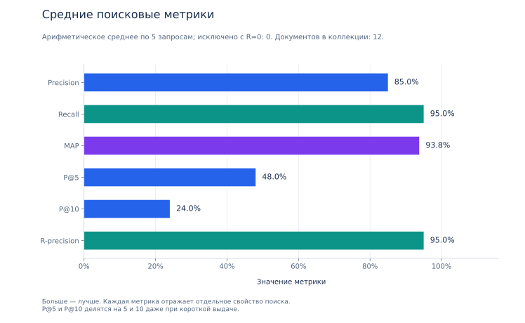
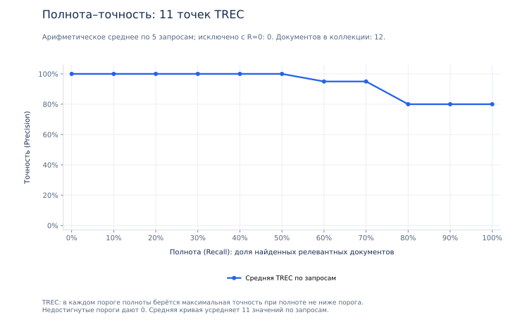
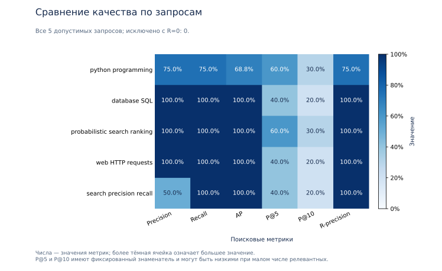
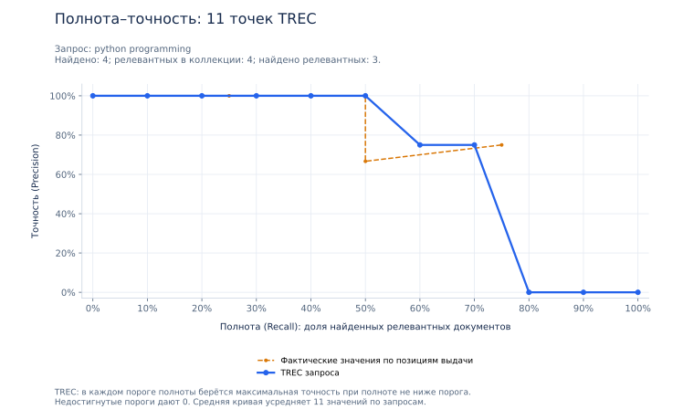
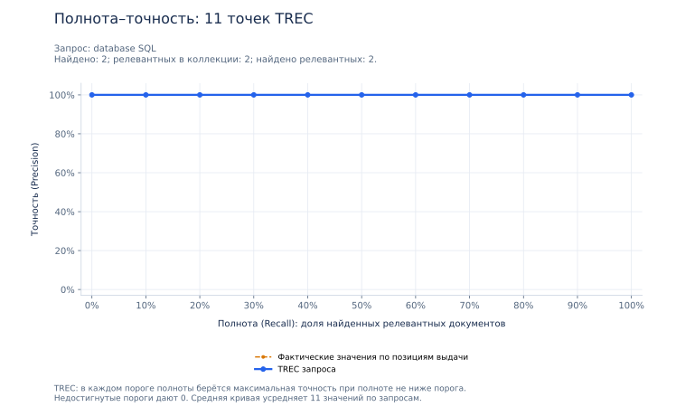
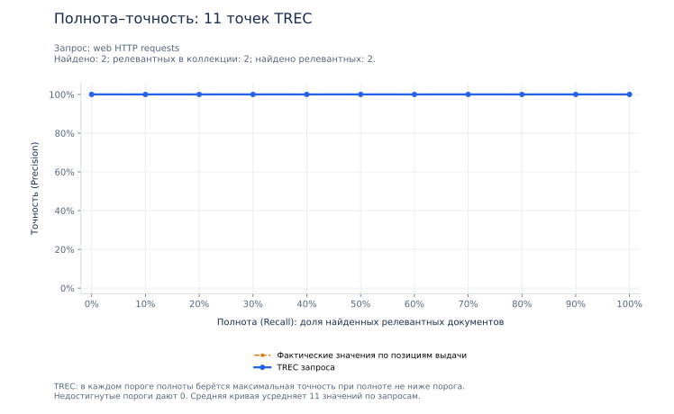
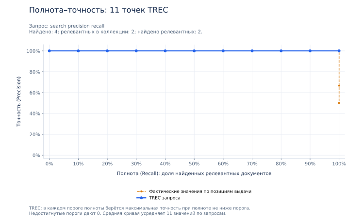

Качество информационного поиска
Вариант 36 · РОМИП’2004, дорожка поиска · BM25: k1=1.5, b=0.75 · Документов: 12 · Оценено запросов: 5 · Исключено: 0
Средние по запросам
Метрики каждого запроса
| query | Precision | Recall | AP | P@5 | P@10 | R-precision |
|---|---|---|---|---|---|---|
| python programming | 0.7500 | 0.7500 | 0.6875 | 0.6000 | 0.3000 | 0.7500 |
| database SQL | 1.0000 | 1.0000 | 1.0000 | 0.4000 | 0.2000 | 1.0000 |
| probabilistic search ranking | 1.0000 | 1.0000 | 1.0000 | 0.6000 | 0.3000 | 1.0000 |
| web HTTP requests | 1.0000 | 1.0000 | 1.0000 | 0.4000 | 0.2000 | 1.0000 |
| search precision recall | 0.5000 | 1.0000 | 1.0000 | 0.4000 | 0.2000 | 1.0000 |
Исключённые запросы
По РОМИП запросы без релевантных документов (R=0) не входят в метрики и среднюю кривую.
Исключённых запросов нет.
Графики
Столбцы показывают отдельные метрики. Цветовая таблица сравнивает запросы. На кривых горизонтальная ось — полнота, вертикальная — точность. Синяя линия показывает 11 значений TREC; оранжевая — фактические значения на префиксах выдачи для одного запроса. Это разные представления, поэтому их значения могут отличаться.







Что означают метрики
- Precision
- Доля релевантных среди всех найденных документов
- Recall
- Доля найденных среди всех релевантных документов коллекции
- AP
- Среднее точностей на релевантных позициях; пропуски дают нулевой вклад
- MAP
- Арифметическое среднее AP по допустимым запросам
- P@5
- Число релевантных в первых 5 результатах / 5
- P@10
- Число релевантных в первых 10 результатах / 10
- R-precision
- Точность первых R результатов; R — число релевантных в коллекции
Диагностические количества
| query | retrieved | relevant | TP | FP | FN | TN |
|---|---|---|---|---|---|---|
| python programming | 4 | 4 | 3 | 1 | 1 | 7 |
| database SQL | 2 | 2 | 2 | 0 | 0 | 10 |
| probabilistic search ranking | 3 | 3 | 3 | 0 | 0 | 9 |
| web HTTP requests | 2 | 2 | 2 | 0 | 0 | 10 |
| search precision recall | 4 | 2 | 2 | 2 | 0 | 8 |
retrieved — найдено документов; relevant — релевантных в коллекции; TP — найдено релевантных; FP — найдено нерелевантных; FN — пропущено релевантных; TN — не найдено нерелевантных.
Методика и данные
Источник: локальный файл 2004_romip_metrix.pdf, стр. 1–3, 5–9. Экспертная разметка независима от ранга BM25: 0 — нерелевантно, 1 и 2 — релевантно. AP и Recall используют всю выдачу и всю размеченную коллекцию. В TREC берётся максимум точности при полноте не ниже каждого порога от 0 до 1 с шагом 0.1; недостигнутые пороги дают 0. Средняя кривая — среднее этих 11 значений.
RIRES упоминается на стр. 1, но её определение в предоставленном PDF отсутствует: кривая RIRES не рассчитывается. В документе арифметическое среднее по запросам названо «микроусреднением» (стр. 5); здесь оно обозначено словами, чтобы избежать путаницы терминов.
Результаты характеризуют выбранную коллекцию и экспертную разметку. Ранг BM25 не является вероятностью или метрикой качества. Машиночитаемые данные: JSON (версия 2), CSV по запросам, средние CSV, исключения CSV.